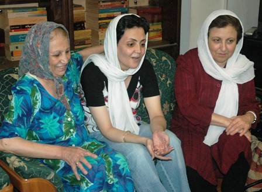
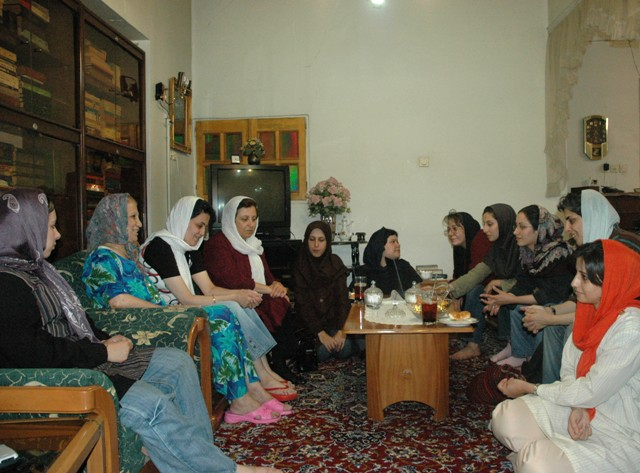

|
|
|
Browsing
Contact Us |
Campaigners |
Face to Face |
Tribune |
Interview |
News |
On the Web |
One Million |
Report
Farsi | Français | German | Italian | Spanish | العربية Also in this section
|

Shirin Ebadi: The Iranian Women’s Movement is the Most Vibrant Movement in the Middle EastSaturday 30 August 2008 Change for Equality: A day before the second anniversary of the Campaign, on August 26, a group of women’s rights activists visited with Mahboubeh Karami, who had been released from prison on August 25, after having spent 70 days in detention. Shirin Ebadi also joined these women’s rights activists in this visit. During this visit and in honor of the second anniversary of the One Million Signatures Campaign, Shirin Ebadi identified the Iranian women’s movement as the strongest movement in the Middle East. "I congratulate all [women’s rights activists] on this victory, especially those who have paid higher prices [in relation to their activism] in the One Million Signatures Campaign." The Nobel Laureate continued by stating that: "the Iranian women’s movement does not have a leader. The true place of the women’s movement is in the homes of every Iranian committed to equality. Leaders can be arrested or killed, and as a result their movements come to a halt. But the Iranian women’s movement does not come to a halt because it does not have any leaders, and its activities rely on each and every individual [involved in the movement]."
 "I am delighted that One Million Signatures Campaign was founded by young women activists. The strength of this movement stems from the participation of this generation of young activists, who are the same age of my daughters. We too derive out strength from the young activists in the Campaign." This woman’s rights defender and supporter of the Campaign continued further by stating that: "the Iranian women’s movement is the strongest movement in the Middle East. Where else in this region can you witness a movement so dynamic? For this reason, I want to congratulate you on this victory."
 Mahboubeh Karami was released on bail in the amount of 100 Million Tomans the previous night. The visit continued with Mahboubeh’s recollection of her experiences in prison. She explained that from among those who were arrested along with her, 22 have expressed interest in joining the Campaign and becoming volunteers. "Prior to this experience, I only understood the Campaign and its aims in theory, but had not felt the impact of legal discrimination on my own life, but in prison I saw women who had been victimized as a result of legal discrimination. During my time in prison, I got a chance to understand first hand the need for the demands of the Campaign." Mahboubeh went on to explain that the female prisoners all requested that: "I convey their opposition to the Family Protection Bill, currently up for consideration by Parliament. These women viewed this Bill as an insult to the family and wanted to sign petitions in opposition to the proposed legislation." Mahboubeh Karami was interrogated four times during the course of her detention. The last time, she was interrogated by two women. "The woman asked me questions about my activities in the Campaign. I explained about our demands. The female interrogators claimed that they were proud to be considered at half the value of men, and they said that they totally believed in these legal discriminations." Karami continued by congratulating other activists involved in the Campaign on the occasion of its second anniversary. "I am happy to be among my friends on this occasion. If I were still in prison, I would have celebrated this anniversary among female prisoners." In the end, this woman’s rights activists explained that: "I plan to work harder than before in an effort to achieve our demands in the Campaign. Not to collect a million signatures, rather to recruit one million volunteers to work toward changing discriminatory laws against women." |